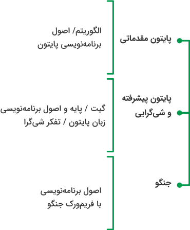
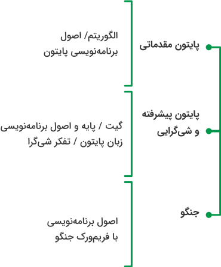

مسیر آموزش و اشتغال برنامهنویسی سمت سرور (بکاند)
 

کاریار در حال حاضر و با همراهی مدرسین و موسسات آموزشی معتبر در چهار مسیر شغلی از سطح مقدماتی تا پیشرفته دورههای آموزشی برگزار میکند:
- مسیر آموزش و اشتغال برنامهنویسی سمت کاربر (فرانتاند)
- مسیر آموزش و اشتغال برنامهنویسی سمت سرور (بکاند)
- مسیر آموزش و اشتغال تحلیل داده
- مسیر آموزش و اشتغال امور اداری
دریافت میکند که این بسته آموزشی شامل
دورههای آموزش تخصصی
دورهی مهارتهای ارتباطی
کلاس زبان
کلاسهای هفتگی حل تمرین
جلسات ماهانه مشاوره با منتور
و کارگاههای جانبی ماهانه در حوزههای عمومی و تخصصی است.
مهارتآموزان بعد از ورود به هر کدام از مسیرهای آموزش و اشتغال کاریار، طی مدت ۶ تا ۹ ماه آموزشهای تخصصی دریافت میکنند و با گذراندن دورهی آموزشهای حرفهای، شامل رزومهنویسی، مصاحبه شغلی، لینکدین و شبکهسازی آمادهی ورود به بازار کار میشوند.